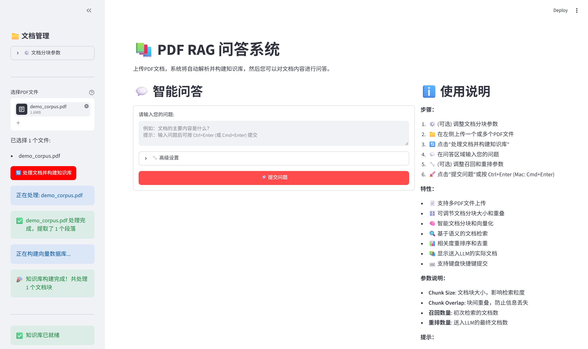
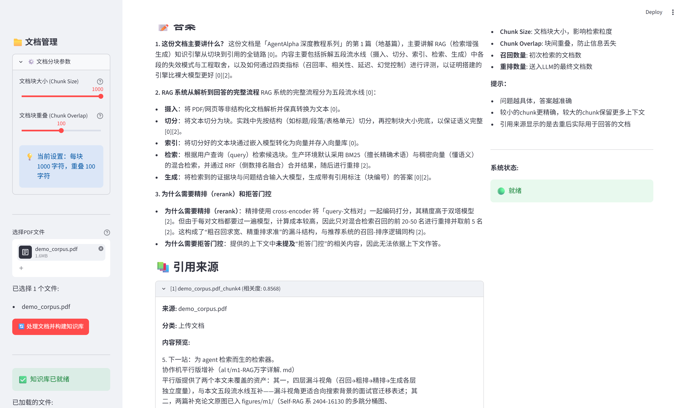
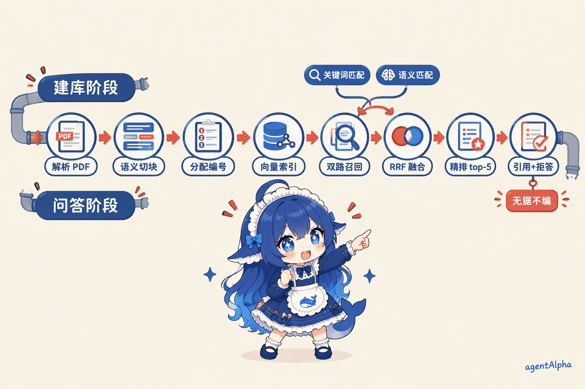
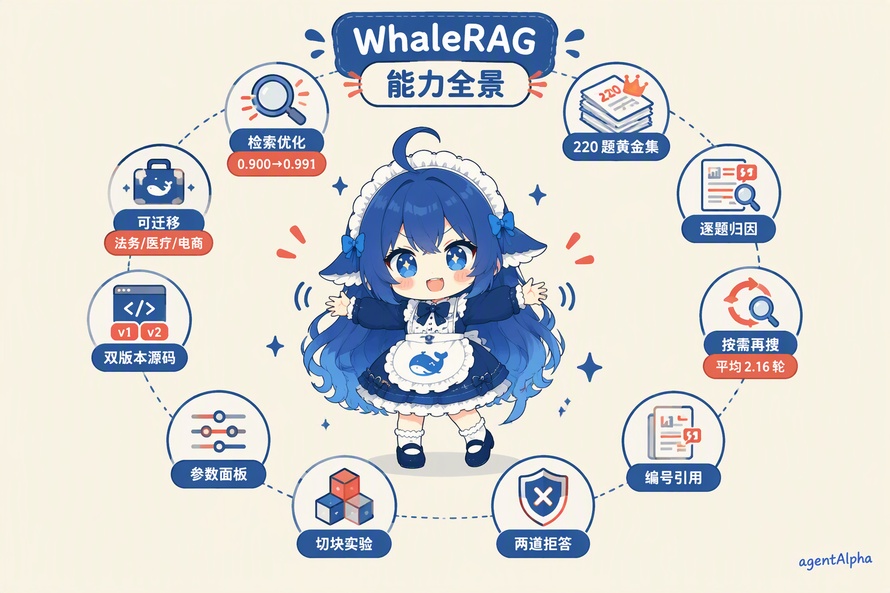
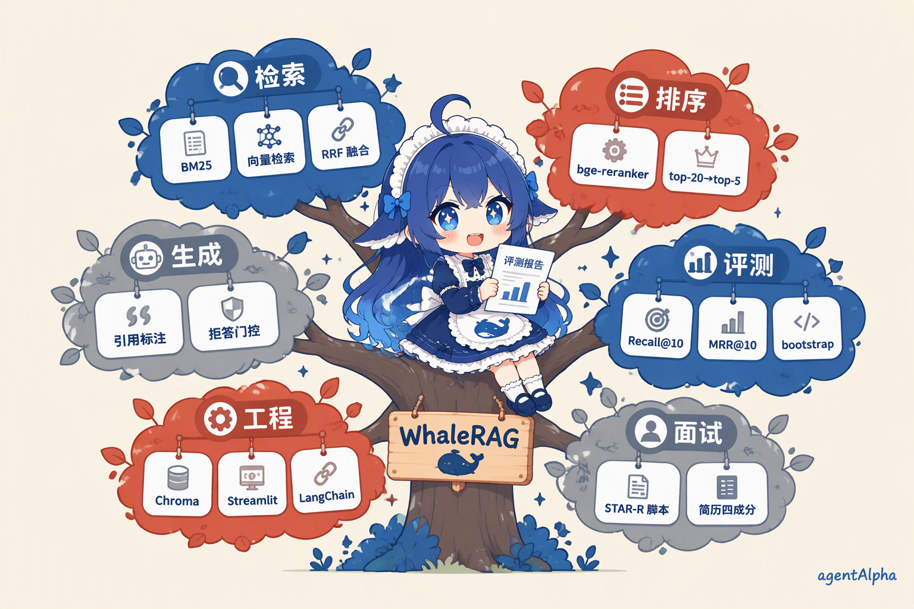
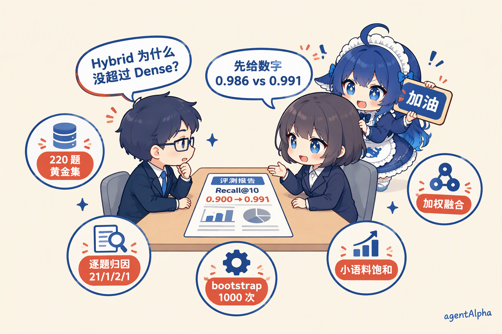

WhaleRAG
一套从北美顶级金融独角兽交付项目里长出来的企业级 RAG 实战。四周时间，你在自己的笔记本上跑通「解析→切块→编号→索引→召回→精排→引用→拒答」完整链路，交出一份带置信区间的评测报告，和一套能讲 30 分钟的面试话术。让数据自己开口说话。

项目介绍
它是什么、解决什么问题、做完你能交出什么。
一句话定位：我们不是在做一个问答机器人，而是在用 RAG 重塑知识的组织方式，让数据自己开口说话。
WhaleRAG 不是让你调一个现成的 API 就完事。你要从 PDF 解析开始，一步步实现语义切块、向量索引、混合检索、精排、引用标注、拒答门控——每一步都有代码、有实验、有「为什么这么选」的解释。
它源自真实的企业交付。我们参考并提炼了曾为北美顶级金融独角兽交付的定制化 RAG 系统：那套系统支撑了上万份财报、风控文件的实时问答与可审计访问。这次我们把那套企业级架构理念「轻量化」，做成一套通用的 RAG 实战模板，保留核心能力——高速检索、低幻觉率、可追溯来源、可控生成——让任何团队都能以极低门槛复刻出自己的智能知识中枢。
对你来说，学完它你能交出三样东西：一个能写进简历的项目、一份带置信区间的评测报告、一套能扛住面试追问的讲法。
先把话说明白：这个项目练的，就是大厂 RAG 岗 JD 上那些词。
下面四条要求摘自 2026 年在招岗位的 JD 原文（第 10 节附可点开的官网链接），右边是你在四周里亲手写的部分：
「基于 RAG 的知识库/检索系统建设」——字节·飞书 → 八步数据流，从 PDF 解析到带编号引用的回答，每一步自己实现
「深入理解 Agentic 架构、RAG」——字节·飞书 → Agentic 按需再搜，系统自己决定查几轮，实测平均 2.16 轮、65% 触发二次搜索
「知识库/RAG 检索系统后端研发，加分：向量检索」——字节 → Chroma 向量库 + BM25/向量双路召回 + RRF 融合
「RAG 提升输出质量；评测体系与回归机制」——网易·知识工程 → 220 题封存评测集 + bootstrap 置信区间 + 逐题分歧归因
别的项目让你「了解概念」，这个项目让你把这四行 JD 原话逐条变成「我写过、我测过、我知道边界在哪」——面试官问到哪一条，你都有代码和数字接住。


项目出身
这不是教学团队拍脑袋想出来的 demo。它来自一个真实的企业交付项目。
Project Aurora（极光计划·化名），这是我们为某北美顶级金融独角兽交付的那套系统的内部代号。客户的核心需求很明确：投研团队要快速横跨上百份财报找证据，风控团队要求每个判定可回溯、可审计——监管盯着，不能出错。
那套系统跑在生产环境里，支撑了上万份财报和风控文件的实时问答。它做的不是「聊天」，而是让每一份文件里的每一个论断都能被找到、被引用、被验证。我们把那套系统里最核心的检索-精排-引用-拒答链路完整保留下来，砍掉了多服务部署、权限审计、私有化这些企业级包装，把它塞进了一台普通笔记本。
所以你在 WhaleRAG 里看到的每一个设计决策，背后都有一个企业级场景在压着：为什么拒答门控要做两道？因为风控场景「宁可不答，不可编造」。为什么每个答案都要编号引用？因为监管要求可审计。这些不是「最佳实践」，是被真实业务逼出来的设计。


企业版是多服务部署 + 权限审计 + 私有化；课程版保留完整链路，跑在笔记本上，API 走 SiliconFlow 免费额度。核心能力一个没少。
项目架构
把 RAG 想象成一个图书管理员。你问他问题，他不是凭记忆回答，而是先去书架找书、翻到具体页、确认内容、然后指着书上的段落告诉你答案。

建库阶段（前四步）
① 解析：PyPDF2 把 PDF 里的文字抽出来。
② 切块：RecursiveCharacterTextSplitter 把长文档切成 1000 字符的小块，块与块之间重叠 100 字符——防止一句话刚好被切在边界上断掉。
③ 编号：每一块分配唯一 ID，这是后面「引用可追溯」的基础。
④ 索引：每块文字用嵌入模型（把文字变向量的模型）变成向量，存入 Chroma 向量库，持久化到磁盘，重启不丢。
问答阶段（后四步）
⑤ 召回：你提问，系统用两条路同时找——BM25 做词面匹配（你用了「利润」就找含「利润」的块），向量做语义匹配（你问「赚了多少钱」也能找到写「净利润」的块），用 RRF 融合两路名次。
⑥ 精排：bge-reranker 对召回的前 20 块重新打分，挑出最相关的 5 块。
⑦ 引用：生成答案时，每个论断后面标 [1][2] 编号，点编号可展开看原文块。
⑧ 拒答：两道门控——知识库里没有的，直接说没有，不编。
这八步不是「看一遍就懂」的抽象概念。每一步你都要亲手写代码、跑起来、看到中间结果，才能理解「为什么 RAG 是这么设计的」。
项目亮点
每条亮点都挂着对应的 JD 要求和面试考点——学一个，认领一个。前六条直接来自字节、网易在招岗位的 JD 原文。

BM25 单路 0.900，换向量检索后 0.991，面试官问「优化有数据吗」，这就是答案。
题目提前封存，改代码重考，bootstrap 1000 次算置信区间。
逐题人工对拍——向量路救回 BM25 21 题，BM25 只救回 1 题，Hybrid 反丢 2 题、补回 1 题，另有 1 题两路都漏。
让系统自己判断资料够不够，平均 2.16 轮、65% 查询触发二次搜索。
答案里每个论断标 [1][2]，点编号展开原文块——可追溯、可审计。
检索最高分低于阈值直接拒；引用编号对不上已有块再拒一次。
BM25 / Dense / Hybrid / Agentic 全跑一遍，数字摆出来看。
Hybrid 0.986 没超过 Dense 0.991，原因写清楚——这叫工程诚实。
完整答案 + 纯 TODO 骨架，学习过程就是实现过程。
换语料（法务/医疗/电商）就是另一个行业的知识库系统。
技术栈
选型原则：能跑在笔记本上、能免费注册、能讲清楚原理。
不需要自己的 GPU。模型全部走 SiliconFlow API，注册即得免费额度，学生跑完全部实验基本够用。
项目文档
12 章深度讲解，约 1.5 万字。每一章对应项目里的一个具体模块或实验。
大模型应用开发岗最高频的落地场景，没有之一。
从「模型不懂你的文件」到「让文件自己说话」的完整逻辑。
PDF 解析的坑、三种切块策略对照、1000/100 是怎么定的。
BM25 和向量检索各自擅长什么，RRF 怎么把两路名次合起来。
精排模型为什么必要、引用编号怎么落地、两道门控怎么设。
Agentic 检索的逻辑、实现方式、以及它的小语料边界。
黄金集四要素、指标定义、bootstrap 置信区间、逐题归因。
企业版的多 Agent 架构思路，以及课程版的简化取舍。
14 条真实故障 → 原因 → 修法，踩坑手册。
6 道练习题，每道带验收标准——做完就知道自己会没会。
STAR-R 脚本 + 追问弹药，30 分钟面试话术。
Hybrid 为什么没超过 Dense、Agentic 的适用条件、下一步方向。

这份文档不是「知识科普」，是项目说明书。每读完一章，你就去改对应的代码、跑对应的实验。读完第 7 章，你手上就有一份自己的评测报告。
学完项目能有什么收获？
不是「我听说过 RAG」，而是「我亲手写过、改过、测过、优化过一套 RAG」。

你能讲清楚 RAG 的八步数据流，每一步的输入输出和为什么这么设计
你能实现 BM25 + 向量双路检索和 RRF 融合，并说清各自适用场景
你能部署精排模型，解释「召回 20、精排 5」的参数逻辑
你能实现编号级引用和两道拒答门控，回答「幻觉怎么治理」
你能构建 Agentic 按需再搜，并说出它的收益边界
你能搭建 220 题封存评测集，用 bootstrap 算出置信区间
你能逐题归因检索分歧，说出「哪条路救回了哪道题」
你能用 Streamlit 搭一个可交互的问答界面，不是黑箱脚本
你能回答「Hybrid 为什么没超过 Dense」——主动讲负结果，面试加分
你能把项目写进简历，用四成分公式写出 3 条有数字的简历句
项目学习方式是怎样的？
四周时间，每周 8-10 小时。不是看视频，是改代码、跑实验、写报告。
第 1 周 · 建库链路：读懂解析和切块，跑通「PDF → 向量库」。练习：换语料建自己的知识库。
第 2 周 · 问答链路：实现双路检索 + RRF 融合 + 精排 + 引用 + 拒答。练习：改召回数量看效果。
第 3 周 · 评测体系：搭黄金集、算 Recall 和 MRR、跑 bootstrap。练习：做逐题分歧归因。
第 4 周 · Agentic 与面试：实现按需再搜、写评测报告、练面试话术。练习：把项目写成简历句。
配套材料
三份源码是同一套系统：reference 是完整参考答案，teacher 加了逐行注释，student 留了 TODO 让你自己填。学习路径是「看 teacher → 写 student → 对照 reference」。
交付物
这三样东西在第四周全部产出。评测报告有固定模板，你填数字和归因分析就行；面试话术用 STAR-R 脚本，对着文档练两遍就能脱稿。
实验证据
别人自夸，我们给数据。而且给的是「谁重跑都能拿到同一份数字」的可复现口径。
评测方法
评测集用 MS MARCO v1.1（微软发布的真实搜索问答数据集），取 220 条查询 + 1810 个段落构成受控候选池，随机种子固定为 42——任何人重跑，拿到的是同一份数据。两个指标：Recall@10（正确答案进前 10 的比例）和 MRR@10（答案排名倒数的平均，衡量「排得靠不靠前」）。置信区间用 bootstrap 有放回重采样 1000 次，取 2.5%/97.5% 分位报 95% CI。

主结果
四行数字，在同一个 220 题黄金集上跑出来：
BM25（纯词面检索）：Recall@10 = 0.900，MRR@10 = 0.456
Dense（向量语义检索）：Recall@10 = 0.991，MRR@10 = 0.536
Hybrid（RRF 融合）：Recall@10 = 0.986
Agentic（按需再搜）：Recall@10 = 0.986
负结果：Hybrid 和 Agentic 都没有超过 Dense
这是这个项目最诚实的一组数字。Hybrid 和 Agentic 的 Recall 都是 0.986，没有超过 Dense 的 0.991。原因很清楚：220 题的小语料上，Dense 已经跑到 0.991，距离上限不足 1 个百分点，融合和再搜没有提升空间。逐题归因也证实了这一点：Hybrid 相比 Dense 反丢 2 道题——RRF 取名次平均，把表现好的那一路的名次稀释掉了。
这组负结果的教育价值：技术的收益边界在语料规模。你学会了「不是上了融合就一定会更好」，以及怎么用实验证明这件事。面试的时候主动讲负结果，比吹一个「全面提升」可信得多。
逐题分歧归因（21 / 1 / 2 / 1）
向量路救回 BM25 漏掉的 21 道题——查询有改写和同义表达，词面匹配失效；BM25 只救回向量路 1 道题——一道歌词字符串题，字面精确命中反而可靠；Hybrid 相比 Dense 反丢 2 道题、补回 1 道；还有 1 道题两路都漏。每个数字都对应具体的题目和原因，人工逐题核对过，不是拍脑袋说的。
一个口径纪律：评测链用 all-MiniLM-L6-v2，教学链用 Qwen3-Embedding-4B。两套链的数字不混用。你跑的时候用哪套，报告里就写哪套。
求职怎么用
这个项目练的，就是 JD 上那些词。不是「相关」，是直接对应。
真实 JD 映射（全部官网核实过、URL 可访问）：
字节 · 飞书｜大模型应用开发工程师——职责含「基于 RAG 的知识库/检索系统建设、Agentic 架构、Function/Tool Calling」
jobs.bytedance.com/experienced/position/7659631655392872709/detail
字节｜知识库 RAG 后端工程师——职责即「知识库/RAG 检索系统后端研发，加分：向量检索/ES 检索」
jobs.bytedance.com/experienced/position/7361735023907670298/detail
网易 · 严选｜Agent 应用开发工程师——要求「RAG/工具调用/提示词工程；LangGraph 等框架」
hr.163.com/job-detail?id=76697
网易 · 游戏互娱｜AI 应用工程师（知识工程）——职责含「RAG 提升输出质量；评测体系与回归机制」
hr.163.com/job-detail?id=73898
映射关系：八步数据流 ↔「RAG 知识库建设」；BM25/向量/RRF ↔「向量检索/ES 检索加分」；220 题评测 + bootstrap + 分歧归因 ↔「评测体系与回归机制」；拒答门控 + 编号级引用 ↔「幻觉问题与处理」；Streamlit 界面 ↔「应用交付全生命周期」。

将单路 BM25 检索改造为 BM25+向量双路 RRF 融合，在 MS MARCO 220 题封存评测集上 Recall@10 从 0.900 提升至 0.991；小语料下向量召回已饱和、融合未再提升（如实归档）；全部数字经 bootstrap 1000 次重采样给出置信区间并做逐题分歧归因。
实现「召回-精排-引用-拒答」完整链路：top-20 召回 + bge-reranker 精排 top-5，答案带编号级引用、无证据时两道门控拒答；教学语料端到端延迟秒级（不夸大为生产性能）；每个引用块可展开回看原文，人工抽检引用正确。
构建 Agentic 按需再搜：系统按首轮证据充分度自行决定是否二次检索（上限 3 轮），实测平均 2.16 轮、65% 查询触发二次搜索；收益受语料规模限制，220 题小池上 Recall 持平 0.986（如实归档）；对比实验固定种子 42 可复现。
我改了什么 + 量化结果 + 代价或边界 + 怎么验证。每一条简历句都必须有这四个成分，否则面试官一追就倒。面试官追问「Hybrid 为什么没超过 Dense？」你怎么答
先给数字：0.986 对 0.991。再给原因：小语料上 Dense 已经饱和，融合没有空间。再给证据：分歧归因里 Hybrid 反丢 2 道题，RRF 取名次平均，把表现好的那一路的名次稀释掉了。最后给改进方向：加权融合，或者按查询类型路由。主动讲负结果的候选人很少——你讲了，就出挑了。
常见问题
学生真实会问的五个问题。
需要自己的 GPU 吗？
不需要。所有模型走 SiliconFlow API，注册即得免费额度，跑完全部实验基本够用。你需要的就是一台能跑 Python 的笔记本。
API 要花多少钱？
用 SiliconFlow 的免费额度跑教学链路基本不花钱。如果你自己加量跑评测，嵌入和生成调用会有少量费用，但我们设计的实验规模在免费额度内可以完成。
基础差能学吗？
你需要会 Python 基础（函数、类、import），会装依赖包。不需要提前懂 RAG、向量、检索——文档里每个术语第一次出现都有大白话解释。如果你会调 API 但没写过完整系统，这个项目刚好补齐从「会调」到「会做」的那一步。
和看论文/看博客有什么区别？
看论文你知道「有人提出了一种方法」。做 WhaleRAG 你知道「这个方法在 220 题上跑出来是多少、换一种方法变多少、为什么变、怎么验证」。区别在「你有没有自己跑过数字」。
做完能得到什么？
三样东西：一个能写进简历的项目（带完整代码和评测报告）、一套能讲 30 分钟的面试话术、一个你自己搭的知识库系统（换语料就是新项目）。
让数据自己开口说话
四周时间，八步链路，一份带置信区间的评测报告。加入 WhaleRAG，把你简历上「熟悉 RAG」变成「我亲手写过一套 RAG」。